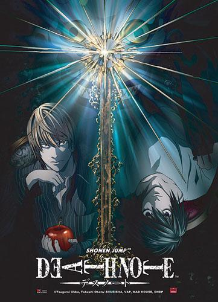

Death Note
O jovem estudante Light Yagami achar um caderno com poderes sobrenaturais, chamado Death Note, no qual era possível matar uma pessoa apenas escrevendo seu nome no caderno. Quando o descobre, Light tenta eliminar todos os criminosos do mundo e dar à sociedade um mundo livre do mal.
- Gênero: Suspense
- Ano: 2006